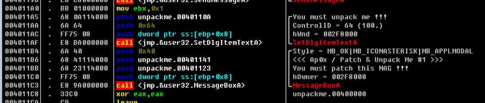

OD学习记录（真难啊~~~QAQ）
这次学习IAT的修复 是按照《OD从零开始》这本书上来学习的 主要是按着书上都操作自己实践一遍。
手动修复IAT
开始修复IAT。
第一步还是先找到OEP，到达OEP后，OD和进程本身不能关掉。脱壳过程中不能把程序关掉。
操作过程和之前相同，先选进程，右键，完整转存，脱壳完毕。
双击脱壳后的程序，无法打开。
第二步：使用importrec修复IAT。不是选择dump后的程序，而是到达OEP的加壳程序。为什么不选择脱壳后的程序呢？
因为我们需要提取源文件里的信息，放到脱壳后的文件里。然后放到脱壳后的程序 附件进程后，里面有个选项
如何使用填写这几个数字呢：
第一个选项是OEP栏：这里填写OEP的相对偏移地址就行
第二个选项是RVA：虚拟内存地址，这里填IAT的起始位置
大小：填写导入表大小，需要用IAT的末地址减去首地址。哪个是首地址，哪个是尾部地址？
有一个小技巧，能帮我们快速定位到IAT的开始和末尾。怎么做呢，在数据窗口右击-长型-地址，那么它的起始位置
就非常直观了：
OEP：10000
RVA：3184
大小：尾部一定得是00000000才行。而且得是最后一个00000000。
接下来就是修复PE头了
打补丁
程序很简单，只有两个窗口
（一）、使用OD载入程序，按F9跳转到入口点
（二）步入第一个call调用
（三）按f8步进来到40109B处
仔细分析这段代码，会发现这段代码的是第一轮解密代码，对004010F5到00401249（004010F5+0x154）这个区段的数据异或0x44
（四）继续按f8步进来到40109B处，可以发现两个循环，这个两个循环都负责解密
（五）继续按f8步进程序会返回到00401038处，此处需要主意的校验和计算和比较校验和的值。
（六）继续运行程序，会发现OEP，如下图
还有下面的跳转表的啦。。。。
（七）通过查找DialogBoxParamA的api手册，会发现4010F5是指向对话框的指针，跳转到4010F5这个地址之后，在往下滚动，发现字符串（x32dbg将这个区段解析为指令了，ascii码对的上，只能在内存窗口中查看）。

通过分析pe结构，我们会发现.text头会有很多代码洞空白区域
插入代码。.。。
修改JMP指令
修改前：
修改后：
然后就成功了。。。。。。不晓得我为啥有点问题QAQ。。。
中途想过之前的方法是直接修改数据窗口的内容来让实现修改 尝试以后发现程序有检测的 不能用 就只能用打补丁的方法咯